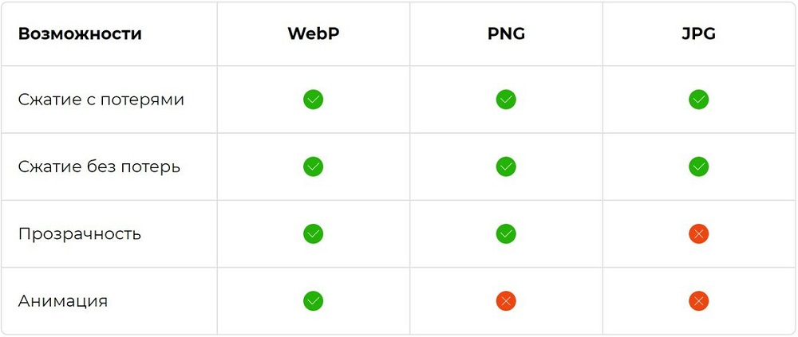

Формат webp-24,42кб
Формат png-130,51кб
Формат jpeg-34,90кб
После просмотра всех трех фотографий я бы сказал что формат webp выигрывает у всех остальных, так как я(своим глазом)не чувствую значительное изменение качества изображения и по кол-ву занимаемого места так же явно превосходит другие форматы
Так уж случилось, что отраслевым стандартом для веб-сайтов стал формат JPeg с компрессией, позволяющий существенно уменьшить размеры картинки с сохранением приемлемого качества. В компании Google решили поработать над собственным алгоритмом сжатия, который был бы лучше, и в 2010 году представили формат WebP, у которого принцип сжатия в общем был такой же, как у jpg. Алгоритм сжатия, основанный на использовании кодека VP8, тоже разработанного и продвигаемого компанией Google, использует технологию предиктивного кодирования, позволяющую оптимизировать прогнозирование цветов пикселей в отдельно взятой области. Сжатие достигается кодированием разницы между прогнозным и фактическим значениями цветов. В качестве контейнера для хранения сжатого изображения используется стандартный RIFF. В итоге WebP действительно оказался лучше JPeg: при одинаковом качестве картинки её размер удалось сократить на 25-30%. Вы скажете, что это немного, и будете не совсем правы. Даже там, где экономия не требуется, уменьшение суммарного объёма графики позволяет ускорить процедуру загрузки сайтов, да и для браузеров это заметное облегчение.
Таблица с возможностями форматов
Соцсеть Facebook, использующая сотни тысяч серверов по всему миру с сотнями петабайт информации, в целях снижения затрат на трафик начала массовый переход на формат WebP – даже если вы загружаете картинки и фото в других форматах, они конвертируются в самый экономный. Такую же тактику начал использовать Telegram, преобразовав все свои популярные стикеры в WebP. Не отстаёт и Google, который для превью на своих серверах также использует именно этот формат.
Недостатки: